Results
This section presents the findings of our evaluation of the STEM Classrooms Project. The data was collected from 17 schools in the Western Province through feedback forms filled by 520 participants (20 students and 10 teachers per school). The analysis was conducted using Microsoft Excel and SPSS, and the results are shown using graphs and charts. Each graph is followed by a clear description explaining the trends, patterns, and what they tell us about the effectiveness of the STEM Classrooms initiative.
4.1 Data Analysis
Respondent Distribution by Designation Across Participating Schools
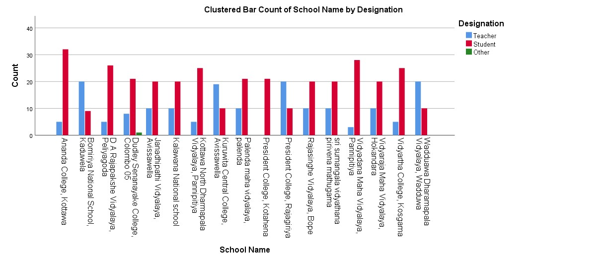
This bar graph illustrates the number of students and teachers from each of the 17 schools who completed the feedback form during our field visits. The data collection process was a core component of the STEM Classroom Evaluation Project, and this graph provides a visual summary of the respondent distribution by designation. The balanced representation of both students and teachers across all schools strengthens the reliability and validity of the findings. It ensures that the analysis reflects diverse perspectives on the implementation and impact of the STEM Classroom initiative at the school level.
4.2 Usage and Functionality
How frequently is the STEM classroom used?
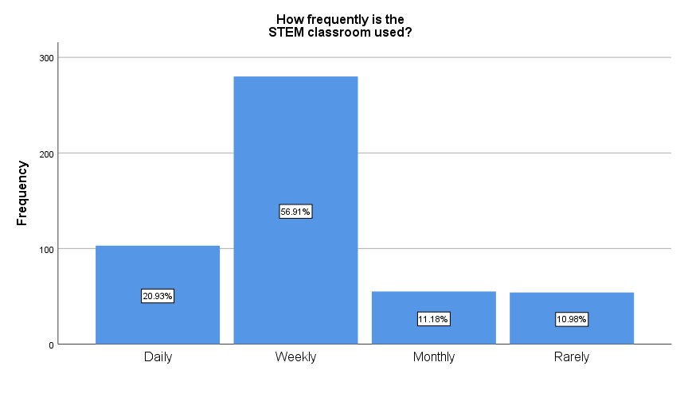
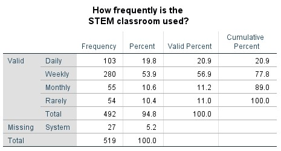
The bar graph illustrates the frequency of STEM classroom usage across the surveyed schools. The findings indicate a strong level of engagement, with 56.91% of respondents reporting weekly usage and an additional 20.93% indicating daily usage. This suggests that a substantial majority of schools have successfully integrated STEM classroom resources into their regular teaching practices, reflecting the growing acceptance and utility of technology-enhanced learning environments. The combined total of over 77% for daily and weekly usage underscores the effectiveness of the STEM initiative in promoting consistent interaction with ICT tools among both teachers and students. The relatively lower proportions of monthly (11.18%) and rare (10.98%) usage may point to localized barriers, yet they also highlight opportunities for targeted support to ensure that all schools are able to maximize the benefits of the STEM facilities. Overall, the usage patterns reflect a positive trend toward the adoption of innovative, technology-based approaches to education.
What type of activities are conducted in the STEM classroom?
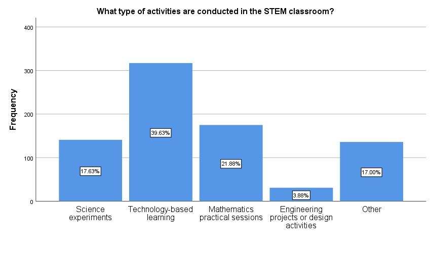
This bar chart presents the distribution of different types of activities carried out in the STEM classrooms based on responses from students and teachers.
• Technology-based learning is the most commonly conducted activity, accounting for 39.63% of responses.
• Mathematics practical sessions make up 21.88%, and Science experiments account for 17.63%.
• Engineering projects or design activities are the least frequent, with just 3.88%.
• Other activities make up 17.00% of the responses, suggesting that schools may be implementing unique or localized content outside the predefined categories.
Are the STEM classroom facilities sufficient?
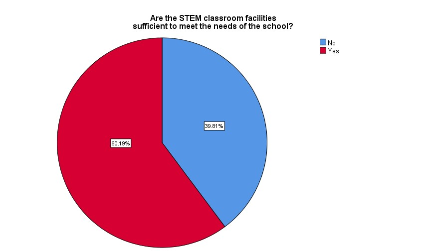
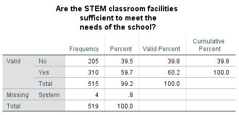
The pie chart illustrates perceptions regarding the adequacy of STEM classroom facilities. A clear majority of respondents indicated that the existing resources are sufficient to meet the needs of their respective schools. This response reflects a high level of satisfaction with the infrastructure provided through the STEM Classrooms Project. The positive feedback suggests that the initiative has been largely successful in equipping schools with the essential tools and technology required to support STEM education. It also implies that, in most cases, the availability of equipment, software, and learning space is aligned with curriculum requirements and student demand. This overall sufficiency creates a favorable learning environment, enabling both teachers and students to engage effectively in STEM-related activities and helping to promote long-term educational outcomes.
Do teachers regularly integrate STEM classroom resources?
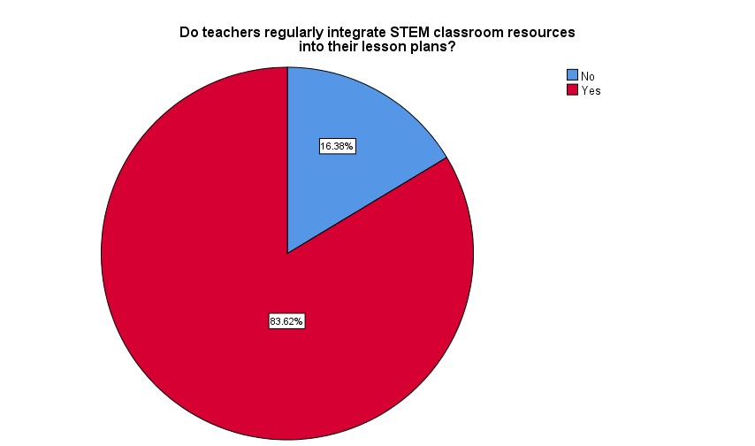
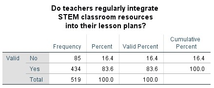
The pie chart demonstrates that a significant majority—83.6% of respondents—affirmed that teachers regularly integrate STEM classroom resources into their lesson plans. This finding is a strong indicator of the effective incorporation of digital tools and STEM-based methodologies into everyday teaching practices. Such a high level of integration suggests that teachers are not only familiar with the available ICT resources but are also actively utilizing them to enhance instructional delivery. This reflects the project's success in fostering a technology-enriched learning environment, which supports interactive, engaging, and student-centered pedagogy. Regular integration also contributes to improved alignment between the STEM classroom facilities and the national curriculum, thereby enhancing both teaching efficiency and student learning outcomes.
4.3 Equipment and Resources
What types of equipment and resources are available?
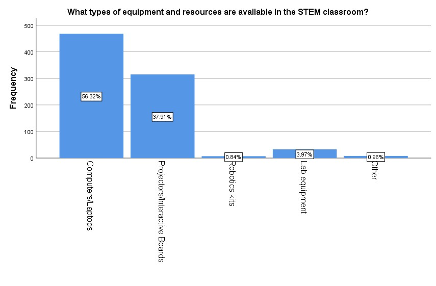
The bar chart displays the frequency and percentage of different types of equipment and resources reported to be available in the STEM classrooms across the surveyed schools.
• Computers/Laptops are the most commonly available resources, reported in 56.32% of the responses.
• Projectors/Interactive Boards are the second most available, with 37.91%.
• Lab Equipment follows distantly at 3.97%.
• Robotics Kits and Other Resources are minimally present, reported at 0.84% and 0.96%, respectively.
Are the available resources functioning well?
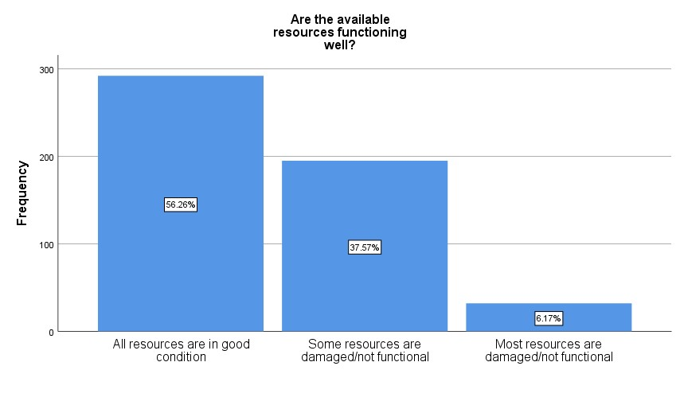
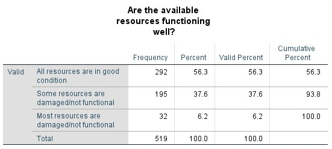
The bar graph presents the respondents' assessment of the functionality of the resources provided in the STEM classrooms. A majority of 56.26% indicated that all resources are in good condition, which reflects a generally high standard of maintenance and usability across the schools. This suggests that the equipment provided through the STEM Classrooms Project is largely operational and accessible, enabling effective teaching and learning experiences. Additionally, 37.57% of respondents reported that some resources are damaged or not functional, while only 6.1% indicated that most resources are not functional. While these figures highlight areas where maintenance and technical support could be strengthened, the overall feedback remains largely positive, indicating that the majority of schools are equipped with functional ICT infrastructure. This supports the continued integration of STEM tools into lesson delivery and underscores the importance of routine servicing to sustain long-term resource effectiveness.
Are additional resources needed?
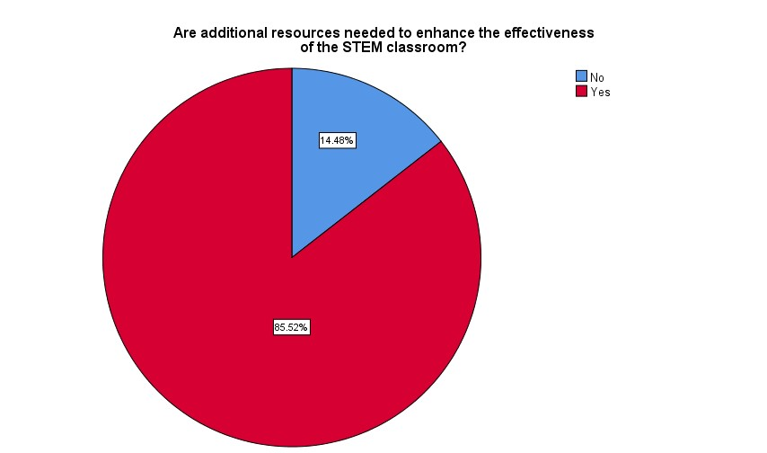
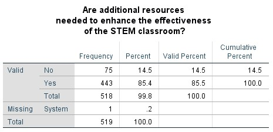
The pie chart reflects responses to whether additional resources are required to further enhance the effectiveness of STEM classrooms. A majority of respondents answered “Yes,” indicating that while the current facilities are functional and beneficial, there is a strong interest in expanding and enriching the existing infrastructure. This feedback should be viewed positively, as it reflects the growing engagement of teachers and students with STEM resources and their recognition of the potential for deeper, more advanced learning experiences. The call for additional resources—such as updated software, more subject-specific tools, or improved internet connectivity—demonstrates that users are actively invested in maximizing the impact of the STEM initiative. It also highlights the project's success in building a foundation that schools are now eager to strengthen through continuous improvement and development.
4.4 Training and Support
Have teachers received training?
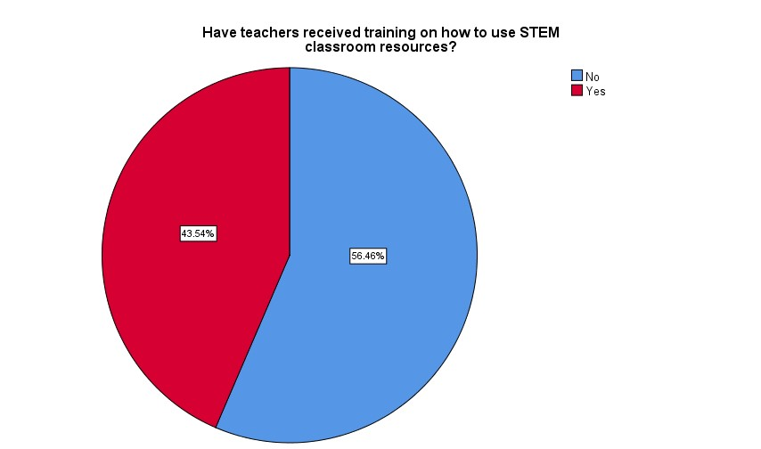
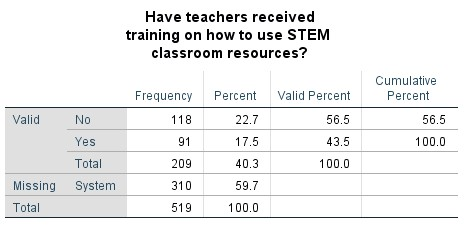
The pie chart displays responses regarding whether teachers have received training on the effective use of STEM classroom resources. A majority of participants indicated “No,” suggesting that while the infrastructure is in place and frequently utilized, formal training opportunities for teachers remain an area for growth. This result presents a valuable opportunity for further enhancement of the STEM initiative. The fact that teachers are actively using the classrooms—even in the absence of structured training—demonstrates their willingness to engage with new technologies and adapt their teaching methods. Providing targeted professional development programs can further strengthen this momentum, equipping educators with the confidence and skills necessary to fully optimize the available resources. Therefore, the findings highlight both the current dedication of teaching staff and the untapped potential that can be unlocked through focused training efforts.
If yes, was the training sufficient?
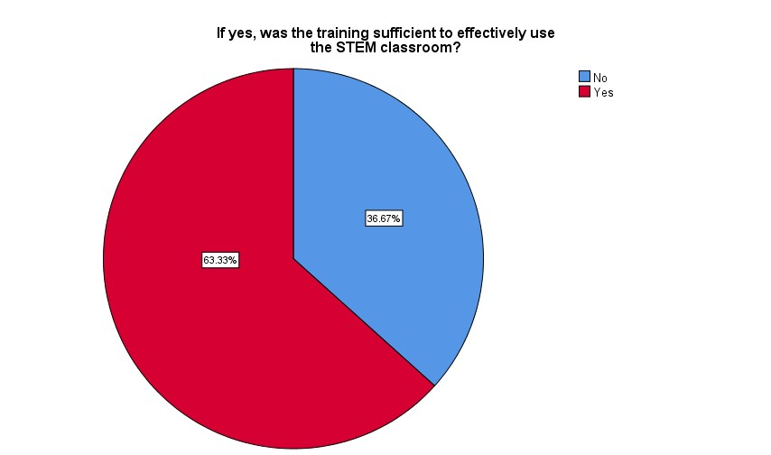
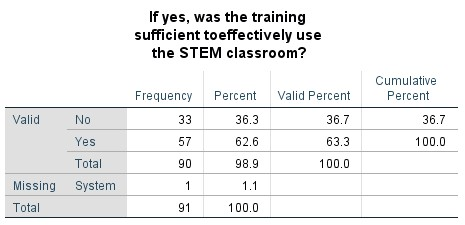
The pie chart presents responses to the question, “If yes, was the training sufficient to effectively use the STEM classroom?” Among those who reported having received training, the majority indicated that the training was sufficient to support their effective use of the classroom resources. Although the overall findings from the previous question revealed that most teachers had not yet received formal training, this result is encouraging. It suggests that the training programs currently offered are of high quality and well-targeted to meet practical classroom needs. The positive perception of training effectiveness among those who participated demonstrates a strong foundation upon which future training initiatives can be expanded. This finding highlights a key opportunity: by increasing access to similar training programs, more teachers could be empowered to confidently and efficiently utilize STEM classroom facilities. Therefore, the project is well-positioned to scale its impact by replicating and broadening these effective training efforts.
Does the school require additional training/support?
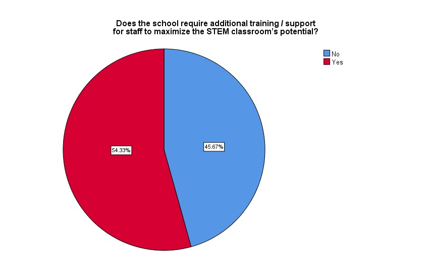
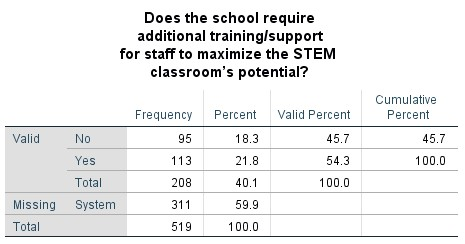
The pie chart presents feedback regarding the need for additional training or support for staff to fully leverage the capabilities of the STEM classroom. A majority of 54.33% of respondents indicated “Yes,” suggesting a proactive recognition among educators of the value of continuous professional development in the effective use of educational technology. This result highlights the growing engagement and commitment of teachers to improving their practice and maximizing the learning potential of STEM resources. Rather than reflecting a deficiency, the expressed need for further training points to a positive mindset toward growth, innovation, and pedagogical improvement. It also emphasizes the importance of sustained investment in capacity-building programs, which can help ensure that the STEM Classroom initiative continues to evolve and remain impactful across diverse school settings.
4.5 Impact Assessment
How has the STEM classroom impacted student learning and engagement?
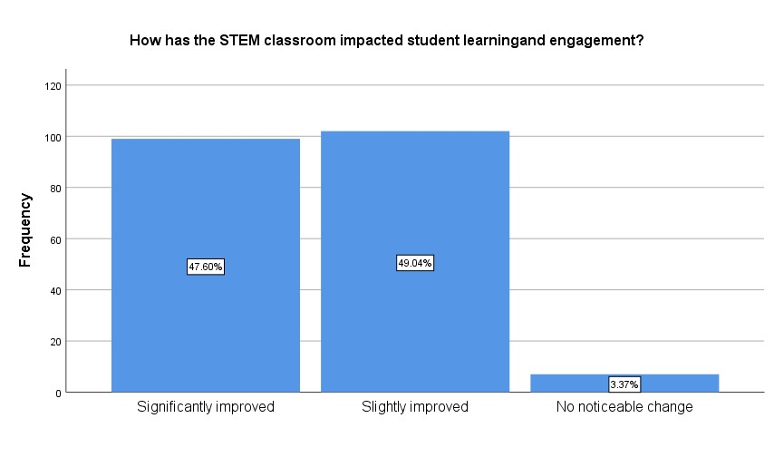
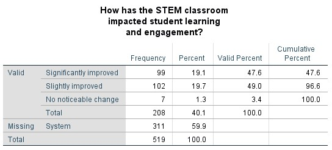
The findings indicate a highly positive impact of the STEM Classroom initiative on student learning and engagement. A substantial 96.64% of the respondents reported improvements, with 47.6% indicating a significant enhancement and 49.04% noting a slight improvement. This overwhelmingly positive feedback suggests that the integration of STEM-focused educational environments has been effective in fostering increased interest, active participation, and enhanced comprehension among students. The minimal percentage (3.4%) reporting no noticeable change further reinforces the overall success of the initiative in transforming traditional learning experiences into more dynamic and engaging ones.
Are there any challenges in using the STEM classroom?
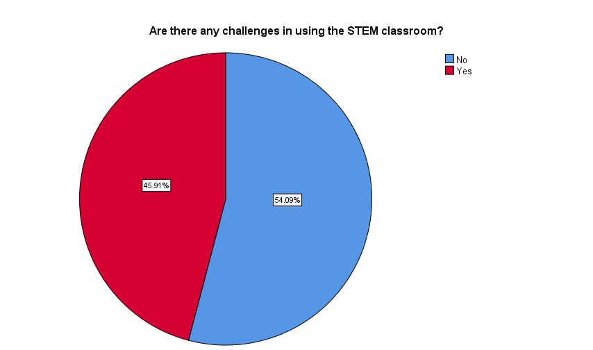
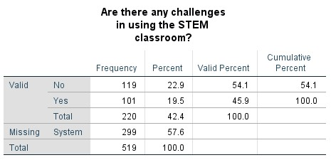
The results suggest that the majority of participants (54.1%) did not encounter any challenges in utilizing the STEM Classroom, indicating a generally smooth and accessible implementation of the initiative. This reflects the user-friendliness, effectiveness of training, and adaptability of the STEM learning environment. The absence of significant obstacles for most users underscores the success of the program in creating a supportive infrastructure that facilitates teaching and learning without imposing undue difficulties on educators or students.
5. Discussions
The evaluation of the STEM Classroom initiative across the surveyed schools reveals a largely positive impact on both teaching practices and student engagement. The frequency of usage data indicates that the majority of users (56.91%) engage with the STEM classroom on a weekly basis, with an additional 20.93% using it daily. These figures demonstrate a consistent and meaningful level of integration into regular classroom activities, suggesting that STEM resources are not only available but are being utilized to complement and enhance traditional instruction.
The widespread use of the STEM classroom is further supported by feedback indicating that facilities are generally sufficient to meet the needs of the schools. Most respondents confirmed that teachers regularly incorporate STEM tools into their lesson plans (83%), which implies that the resources provided align well with curricular goals and teaching strategies. This level of integration is an encouraging sign that the initiative is fostering a culture of active, hands-on learning among educators and learners alike.
In terms of infrastructure, a majority (56.26%) reported that all STEM resources were in good working condition. However, the 37.57% who indicated that some equipment was damaged or non-functional suggests a need for routine maintenance and resource audits. While this does not significantly detract from the overall success of the program, it points to the importance of sustainability planning to preserve the functionality and effectiveness of learning tools over time.
Despite most teachers not receiving formal training on how to use the STEM resources, it is noteworthy that among those who had undergone training, the majority found it sufficient for effective implementation. Interestingly, more than half of the respondents (54.33%) indicated that additional training or support was not necessary. This may reflect a confidence in self-directed learning or peer support systems already in place. However, it also raises questions about whether the full potential of the STEM classroom is being realized in the absence of structured, continuous professional development.
Another promising finding is that the majority of respondents did not experience any challenges in using the STEM classroom (54.1%). This suggests that the design, accessibility, and usability of the classroom environment were well-considered during implementation. Nonetheless, for the remaining portion of respondents who may face challenges, further investigation is warranted to understand the nature of those difficulties—be they technical, pedagogical, or related to classroom management.
The most significant outcome of this evaluation is the demonstrated impact of the STEM classroom on student learning and engagement. An overwhelming 96.64% of respondents reported improvements, with 47.6% identifying a significant positive change. This finding supports the hypothesis that STEM classrooms promote a more interactive and stimulating learning environment, potentially leading to greater academic achievement and enhanced motivation among students.
Despite the overall success of the initiative, several limitations must be acknowledged. The data collection relied on self-reported responses, which may be subject to response bias, exaggeration, or underreporting. Additionally, the study did not account for variations in how each school integrates STEM resources or the availability of complementary technologies and support staff, which could influence outcomes.
6. Broader Implications
The positive reception and effective usage of STEM classrooms suggest a shift towards more modern, technology-driven educational environments in Sri Lankan schools. This trend holds potential for reducing disparities in science and technology education and equipping students with the skills necessary for a knowledge-based economy. Furthermore, the integration of such classrooms can foster collaboration, creativity, and problem-solving skills—competencies that are essential for 21st-century learners.
7. Recommendations for Future Study
Future research should aim to address the current study’s limitations by incorporating a mixed-methods approach that includes classroom observations, performance assessments, and in-depth interviews with teachers and students. Additionally, longitudinal studies could help evaluate the sustained impact of the STEM classroom on academic performance, critical thinking skills, and interest in STEM careers.
Moreover, future studies should explore the development and evaluation of tailored training programs to ensure that all educators are equipped to maximize the use of STEM resources. Research into effective maintenance models and resource-sharing strategies among schools could also support the long-term sustainability of the initiative.
8. Conclusion
This study aimed to evaluate the implementation and impact of the STEM Classrooms Project in 17 selected schools across the Western Province. The evaluation revealed that the initiative has had a positive and measurable influence on both teaching methods and student engagement in STEM education. The most significant outcome was the confirmation that STEM resources are not only being utilized consistently often on a weekly or even daily basis but are also contributing to enhanced student motivation and active participation in learning.
The objectives outlined at the beginning of the project were successfully achieved through a systematic methodology that involved designing structured feedback tools, conducting school visits, engaging with both students and teachers, and performing statistical and thematic analysis. The data collected from 520 participants confirmed that the majority of schools have integrated STEM classrooms into their lesson planning and that students are benefiting from this technology-enhanced environment.
However, the evaluation process was not without challenges. Coordinating visits often required in-person scheduling, as many schools could not confirm appointments via telephone. Scheduling had to be aligned with the availability of principals and teaching staff, which sometimes led to delays and rescheduling. Transportation logistics and managing team members' availability also added layers of complexity. Furthermore, in several instances, access to students was limited due to ongoing term tests, school events, or restrictions on certain grade levels. In addition, some schools lacked online contact information, making initial communication more difficult.
Despite these difficulties, the project enabled the team to develop a broad set of academic and professional skills. These included field coordination, data collection and analysis (using tools such as Excel and SPSS), report writing, stakeholder communication, digital presentation development, and collaborative problem-solving. The experience also enhanced our adaptability, time management, and leadership abilities—skills that are valuable in both academic research and professional environments.
Based on the findings, several key recommendations are proposed to further improve the STEM Classroom initiative:
- Conduct teacher training workshops that focus on effective integration of STEM tools into daily lesson planning, ensuring all educators are confident and well-equipped.
- Implement a structured follow-up mechanism to monitor classroom usage, resource condition, and teaching outcomes regularly.
- Increase awareness among students about the purpose and benefits of STEM classrooms through orientation sessions or visual displays.
- Establish a centralized contact directory for all participating schools to streamline communication and scheduling.
- Support mindset change among reluctant teachers through peer mentoring, recognition programs, and exposure to best practices.
In conclusion, the STEM Classrooms Project has made a strong contribution to modernizing educational practices and promoting interactive, student-centered learning. The initiative is well-aligned with national educational goals and has shown the capacity to drive meaningful change in classroom environments. With ongoing support, professional development for educators, and consistent follow-up at the school level, the project has the potential to transform the future of STEM education in Sri Lanka, equipping students with the skills and mindset necessary to thrive in a knowledge-based, innovation-driven global economy.